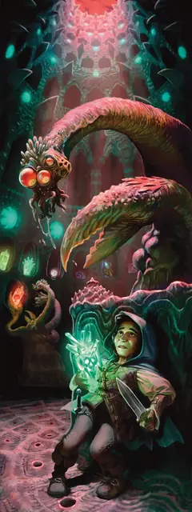

Йитианин
Yithian
Большая Аберрация, Хаотичная Нейтральная

Класс Защиты 14 Инициатива +5 (15)
Хиты 180 (19к10 + 76)
Скорость 30 футов
| мод | спас | ||
|---|---|---|---|
| СИЛ | 18 | +4 | +4 |
| ЛОВ | 10 | +0 | +0 |
| ТЕЛ | 18 | +4 | +9 |
| мод | спас | ||
|---|---|---|---|
| ИНТ | 21 | +5 | +10 |
| МДР | 18 | +4 | +4 |
| ХАР | 19 | +4 | +4 |
Иммунитеты Психический; Испуганный, Отравленный, Очарованный
Чувства пассивное Восприятие 14, Истинное зрение 60 футов
Языки Глубинная речь, Телепатия 120 фт.
Опасность 15 (13 000 опыта; БВ +5)
Особенности
Сопротивление магии. Йитианин совершает с Преимуществом спасброски от заклинаний и прочих магических эффектов.
Ограждённый разум. Мысли йитианина никоим образом невозможно прочесть, а другие существа могут общаться с ним телепатически только с позволения йитианина.
Действия
Мультиатака. Йитианин совершает три атаки Клешнёй. Он может заменить одну из этих атак использованием Глотка мыслей.
Клешня. Бросок рукопашной атаки: +9, досягаемость 10 фт. Попадание: 18 (4к6 + 4) Колющего урона. Если цель — существо, она Схвачена (Сл освобождения от захвата 14) одной из двух клешней.
Глоток мыслей. Спасбросок Интеллекта: Сл 18, одно Схваченное, Недееспособное или Обездвиженное существо в пределах 10 футов. Провал: 15 (3к6 + 5) Психического урона. Максимум Хитов цели снижается на число, равное полученному урону, а йитианин восстанавливает такое же количество Хитов.
Бонусные действия
Обмен сознаниями (Перезарядка 6). Спасбросок Интеллекта: Сл 18, один видимый йитианцином Гуманоид в пределах 5 футов. Провал: Цель одержима йитианцином; после этого йитианец исчезает, а цель получает состояние Недееспособный и теряет контроль над своим телом. Теперь йитианин контролирует это тело; цель не воспринимает его действия и окружение. Йитианин не может стать целью атак, заклинаний и прочих эффектов. Он сохраняет свою статистику, но использует Скорость одержимой цели, а также её модификаторы Силы, Ловкости и Телосложения; он узнаёт всё, что знала цель.
Одержимость длится до тех пор, пока Хиты тела не опустятся до 0 или пока йитианин Бонусным действием не покинет его. Когда одержимость оканчивается, йитианин появляется в незанятом пространстве в пределах 5 футов от цели. Цель Ошеломлена на 1 минуту чуждыми воспоминаниями и получает Иммунитет к Обмену сознаниями этого йитианцина на 24 часа.
Успех: Цель получает Иммунитет к Обмену сознаниями этого йитианина на 24 часа
Чуждая магия (2/день). Йитианин сотворяет Воображаемого убийцу, Изменение памяти, Подсматривание или Путешествие через растения, не нуждаясь в компонентах (заклинательная характеристика — Интеллект, Сл спасброска заклинаний 18).
Бонус мастерства +5
Среда обитания Город, Подземье, Пустыня
Сокровища Магические
Йитианин
Грибовидный пришелец, меняющий тела
Йитиане, или же раса Йит, — странствующие по космосу учёные с примечательными коническими телами и четырьмя конечностями, оканчивающимися клешнями, органами чувств и похожими на флейты органами общения. Они ищут секреты, чтобы пополнять обширные библиотеки, и ведут изыскания, обмениваясь разумом с обитателями иных миров — подчас навсегда. Когда йитианин меняется разумом с существом, он заточает разум жертвы в собственном теле, которое затем телепортирует на свой непостижимо-чуждый родной мир.